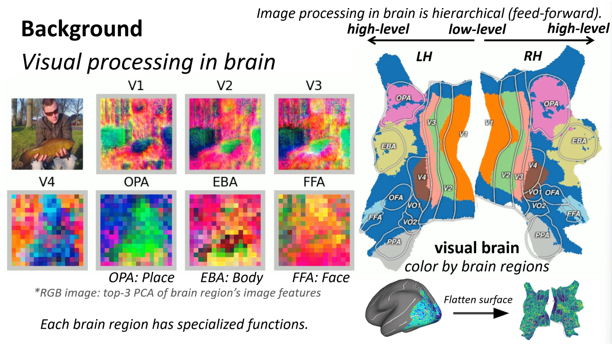
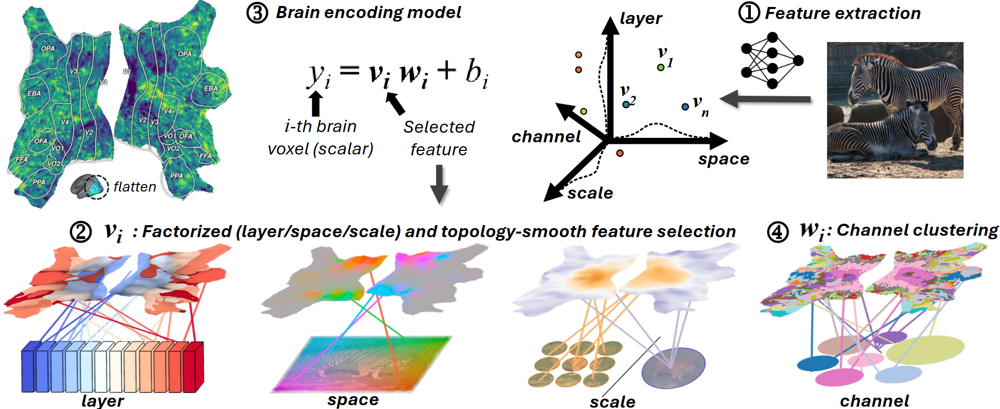
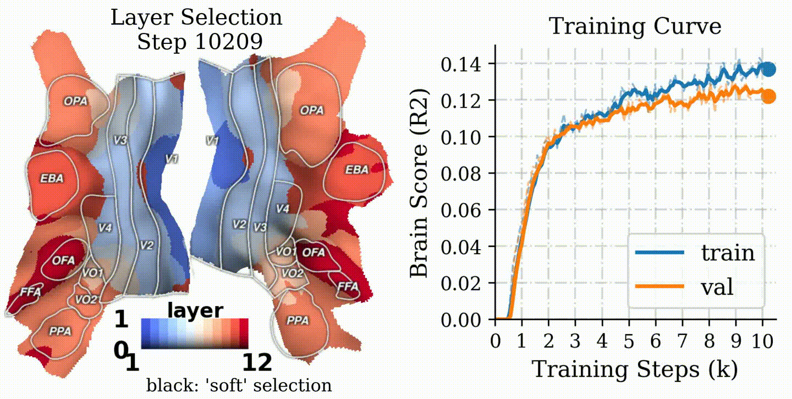
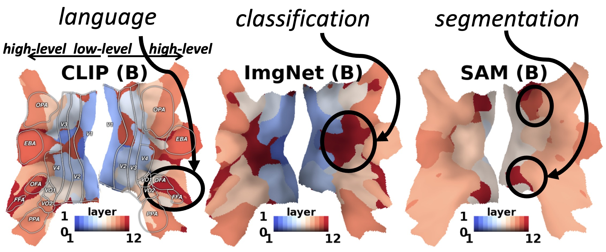
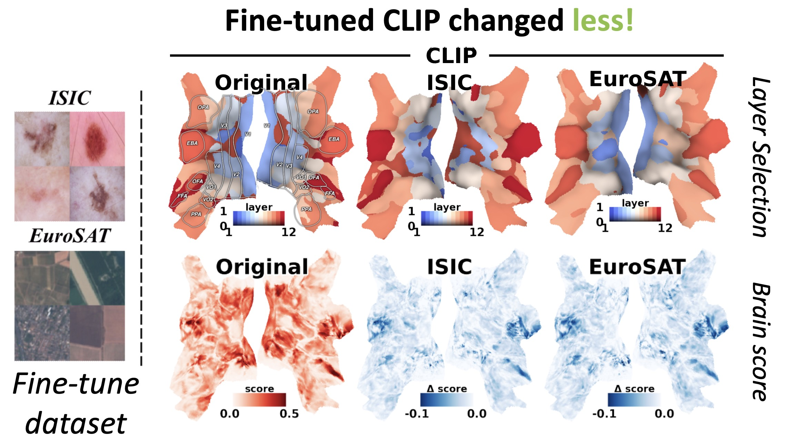
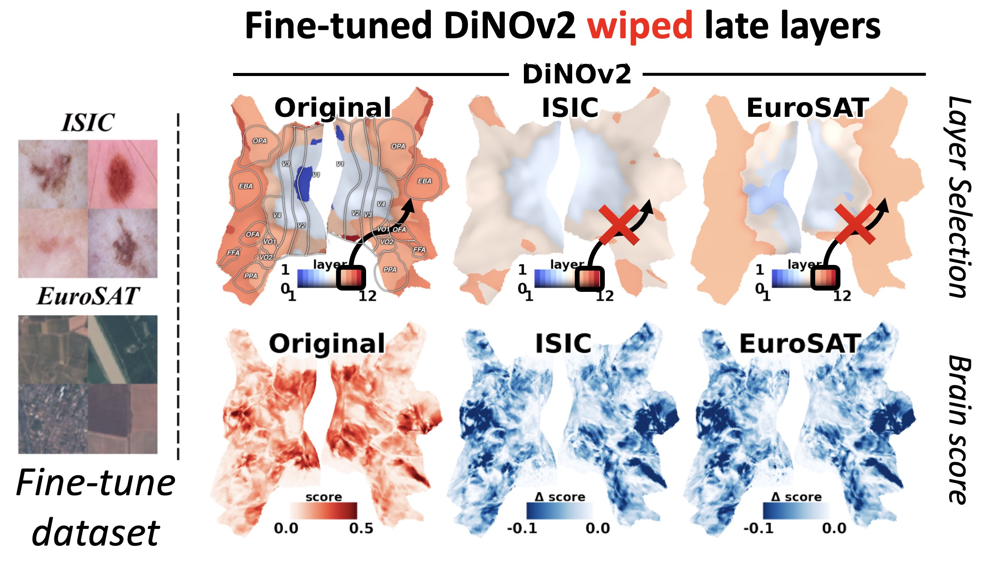

Brain Decodes Deep Nets
University of Pennsylvania
*: co-advise
Main Finding
A "brain-like" hierarchy is not just an interpretability story—it predicts fine-tuning robustness.
Across models, the ones that exhibit a clean early→late alignment with the visual hierarchy (V1/V2 → mid-level areas → high-level regions) are the same ones that preserve useful representations under adaptation, and less forgetting during fine-tuning.
What is "brain-aligned hierarchy"?
We say a model has a brain-aligned hierarchy when:
- Early layers best predict responses in early visual cortex (low-level structure)
- Intermediate layers best predict mid-level regions
- Later layers best predict high-level regions (semantic selectivity)
In CLIP-like models, this mapping is especially pronounced in the intermediate stages, suggesting those layers are where transferable, brain-consistent abstractions emerge.

How we measure it
We train a brain encoding model to predict voxel responses from a frozen vision network's features. During training, each voxel learns where in the network it "reads from":
- Layer (which model depth)
- Space / receptive field (which image region)
- Scale (patch vs class tokens)
- Channel (which feature subspace)
After training, we turn these learned selectors into a network-on-brain visualization: each voxel is colored by its best-matching layer.

The intuitive understanding for our visualization is: each brain voxel asks the question, "which network layer/space/scale/channel best predicts my brain response?".

Results
1) CLIP shows a clean hierarchical alignment
CLIP exhibits a strong early→late mapping onto the visual hierarchy, with the peak alignment often in intermediate layers.

CLIP: Best-matching layer shows an early→late hierarchy aligned with the brain's hierarchy; ImageNet: Last layer maps to the middle level brain regions; SAM: Last layer maps to the low level brain regions.
2) Hierarchy predicts fine-tuning robustness
When we fine-tune models on downstream tasks, models with stronger brain-aligned hierarchy show:
- less catastrophic forgetting
- more stable intermediate layer
- better retention of general-purpose features
Interpretation: a well-formed hierarchy provides a "stable scaffold" that downstream objectives can adapt.


Why this matters
Downstream accuracy alone can't tell you how a model is organized—or how fragile it will be under adaptation.
Brain-aligned hierarchy gives a practical diagnostic:
- Which models learn transferable mid-level abstractions?
- Which models will fine-tune without collapsing their representations?
- Where in the network does task-relevant information actually live?